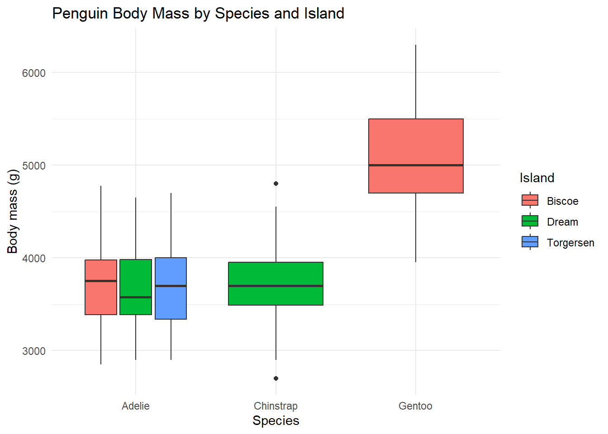
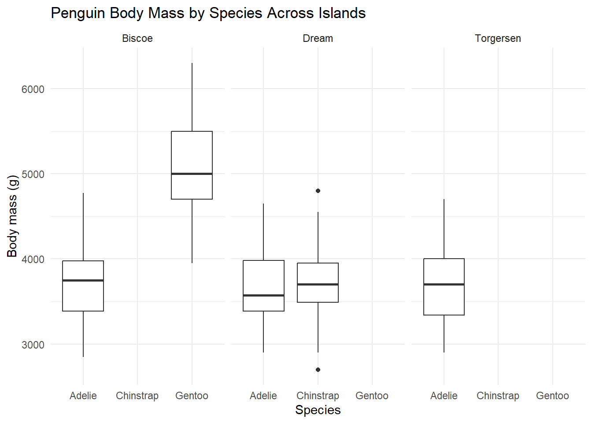
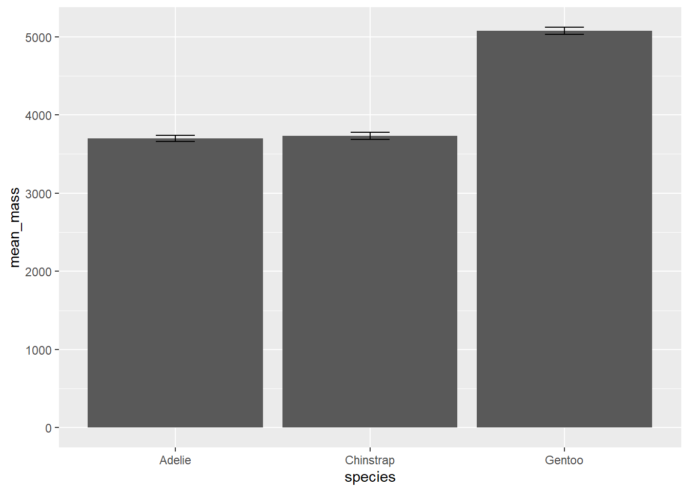

objects()character(0)##Introduction
This workshop provides an introduction to data manipulation and analysis in R using the tidyverse suite of packages. The focus is on importing data from various file formats, inspecting dataset structure, selecting relevant variables, filtering observations, sorting data, creating new variables, summarising data by groups, and visualising patterns in ecological datasets. The Palmer Penguins dataset is used as an example to demonstrate these concepts and techniques.
objects()character(0)rm(list = ls())objects()character(0)##Troubleshooting Tip: ##If objects appear in the Environment despite starting a new R session, a hidden .RData file may be automatically restoring data from previous sessions. To remove it and ensure a clean working environment, run:
unlink("~/.RData")##This helps maintain reproducible workflows and prevents hidden objects from influencing current analyses .
Environmental and ecological datasets are commonly stored in different file formats depending on their source. In this exercise, data were imported from three common formats: CSV, TSV, and Excel spreadsheets. The here() package was used to create reproducible file paths relative to the project directory, ensuring that the workflow can be executed on any computer without modifying file locations.
library(tidyverse)Warning: package 'tidyverse' was built under R version 4.5.3Warning: package 'ggplot2' was built under R version 4.5.3Warning: package 'tibble' was built under R version 4.5.3Warning: package 'tidyr' was built under R version 4.5.3Warning: package 'readr' was built under R version 4.5.3Warning: package 'purrr' was built under R version 4.5.3Warning: package 'dplyr' was built under R version 4.5.3Warning: package 'forcats' was built under R version 4.5.3Warning: package 'lubridate' was built under R version 4.5.3── Attaching core tidyverse packages ──────────────────────── tidyverse 2.0.0 ──
✔ dplyr 1.2.0 ✔ readr 2.2.0
✔ forcats 1.0.1 ✔ stringr 1.6.0
✔ ggplot2 4.0.2 ✔ tibble 3.3.1
✔ lubridate 1.9.5 ✔ tidyr 1.3.2
✔ purrr 1.2.1
── Conflicts ────────────────────────────────────────── tidyverse_conflicts() ──
✖ dplyr::filter() masks stats::filter()
✖ dplyr::lag() masks stats::lag()
ℹ Use the conflicted package (<http://conflicted.r-lib.org/>) to force all conflicts to become errorslibrary(readxl)Warning: package 'readxl' was built under R version 4.5.3CSV (Comma-Separated Values) files store data as plain text with columns separated by commas. This is one of the most widely used formats for scientific data exchange.
benthic_cover <- read_csv(
here::here("data", "workshop1", "reef_cover_log.csv")
)Rows: 6 Columns: 7
── Column specification ────────────────────────────────────────────────────────
Delimiter: ","
chr (1): site_id
dbl (5): transect_no, depth_m, hard_coral_pct, macroalgae_pct, bare_substra...
date (1): date
ℹ Use `spec()` to retrieve the full column specification for this data.
ℹ Specify the column types or set `show_col_types = FALSE` to quiet this message.TSV (Tab-Separated Values) files use tab characters to separate columns and are commonly generated by automated sensors, telemetry systems, and environmental monitoring equipment.
acoustic_stream <-read_tsv(
here::here("data", "workshop1", "acoustic_telemetry_stream.txt")
)Rows: 6 Columns: 5
── Column specification ────────────────────────────────────────────────────────
Delimiter: "\t"
chr (3): receiver_id, tag_id, species
dbl (1): sensor_depth_m
dttm (1): timestamp
ℹ Use `spec()` to retrieve the full column specification for this data.
ℹ Specify the column types or set `show_col_types = FALSE` to quiet this message.Excel files can contain multiple worksheets, formatting information, and metadata. The read_excel() function allows a specific worksheet to be targeted during import.
fisheries_annual <- read_excel(
here::here("data", "workshop1", "fish_catch_data.xlsx"),
sheet = "Commercial_2026"
)Some datasets contain notes or comments before the actual column headers. These extra rows can cause R to incorrectly identify variable names when importing data.
mangrove_data <- read_csv(file = here::here("data", "workshop1","mangrove_survey_raw.csv"))Warning: One or more parsing issues, call `problems()` on your data frame for details,
e.g.:
dat <- vroom(...)
problems(dat)Rows: 11 Columns: 1
── Column specification ────────────────────────────────────────────────────────
Delimiter: ","
chr (1): Field team: Smith and Jones
ℹ Use `spec()` to retrieve the full column specification for this data.
ℹ Specify the column types or set `show_col_types = FALSE` to quiet this message.mangrove_data <- read_csv(
here::here("data","workshop1", "mangrove_survey_raw.csv"),
skip = 5, # Skip the first 5 lines of field notes
na = c(".", "NA", "9999", "ND", "blank")) # Convert known text alts to true NARows: 6 Columns: 6
── Column specification ────────────────────────────────────────────────────────
Delimiter: ","
chr (2): site_id, notes
dbl (4): plot_no, canopy_height_m, crab_burrows_count, salinity_ppt
ℹ Use `spec()` to retrieve the full column specification for this data.
ℹ Specify the column types or set `show_col_types = FALSE` to quiet this message.Tibbles Datasets imported using tidyverse functions are stored as tibbles, a modern version of the traditional R data frame. Tibbles provide cleaner console output, display variable types automatically, and prevent accidental partial column matching, making them safer and easier to work with during data analysis.
class(benthic_cover)[1] "spec_tbl_df" "tbl_df" "tbl" "data.frame" benthic_cover_df <- as.data.frame(benthic_cover)
class(benthic_cover_df)[1] "data.frame"VS Data Frames
# Print the old-style dataframe structure to view
print(benthic_cover_df) site_id transect_no date depth_m hard_coral_pct macroalgae_pct
1 Nelly_Bay 1 2026-05-10 4.5 45.2 12.1
2 Nelly_Bay 2 2026-05-10 5.1 38.5 15.4
3 Geoffrey_Bay 1 2026-05-11 3.8 52.1 8.3
4 Geoffrey_Bay 2 2026-05-11 4.2 48.9 10.2
5 Florence_Bay 1 2026-05-12 6.0 61.3 5.1
6 Florence_Bay 2 2026-05-12 5.8 58.7 6.4
bare_substrate_pct
1 42.7
2 46.1
3 39.6
4 40.9
5 33.6
6 34.9# And compare with tibble alternative
print(benthic_cover)# A tibble: 6 × 7
site_id transect_no date depth_m hard_coral_pct macroalgae_pct
<chr> <dbl> <date> <dbl> <dbl> <dbl>
1 Nelly_Bay 1 2026-05-10 4.5 45.2 12.1
2 Nelly_Bay 2 2026-05-10 5.1 38.5 15.4
3 Geoffrey_Bay 1 2026-05-11 3.8 52.1 8.3
4 Geoffrey_Bay 2 2026-05-11 4.2 48.9 10.2
5 Florence_Bay 1 2026-05-12 6 61.3 5.1
6 Florence_Bay 2 2026-05-12 5.8 58.7 6.4
# ℹ 1 more variable: bare_substrate_pct <dbl>Before conducting any analysis, it is important to inspect the structure of a newly imported dataset. This step helps identify the available variables, their data types, dataset dimensions, and any potential issues that may require cleaning prior to analysis. # Exploring the Palmer Penguins Dataset The Palmer Penguins dataset was loaded as an example ecological dataset for practicing data wrangling and exploratory analysis. Before performing any analysis, the structure of the dataset was inspected to identify the available variables, data types, and overall dataset dimensions. # Install the data package (execute this command once in your console pane and then delete!)
#install.packages("palmerpenguins")library(palmerpenguins)Warning: package 'palmerpenguins' was built under R version 4.5.3
Attaching package: 'palmerpenguins'The following objects are masked from 'package:datasets':
penguins, penguins_rawdata("penguins")Examine the structure of the dataset - always do this when loading a new dataset!
glimpse() is a tidyverse function that provides a concise overview of the dataset, showing variable names, data types, and a preview of the data.
str() is a base R function that gives a more detailed structure of the dataset, including the number of observations and variables, as well as the data types of each variable. Both functions are useful for understanding the dataset before performing any analysis or cleaning steps.
glimpse(penguins) # tidyverse version (from dplyr package)Rows: 344
Columns: 8
$ species <fct> Adelie, Adelie, Adelie, Adelie, Adelie, Adelie, Adel…
$ island <fct> Torgersen, Torgersen, Torgersen, Torgersen, Torgerse…
$ bill_length_mm <dbl> 39.1, 39.5, 40.3, NA, 36.7, 39.3, 38.9, 39.2, 34.1, …
$ bill_depth_mm <dbl> 18.7, 17.4, 18.0, NA, 19.3, 20.6, 17.8, 19.6, 18.1, …
$ flipper_length_mm <int> 181, 186, 195, NA, 193, 190, 181, 195, 193, 190, 186…
$ body_mass_g <int> 3750, 3800, 3250, NA, 3450, 3650, 3625, 4675, 3475, …
$ sex <fct> male, female, female, NA, female, male, female, male…
$ year <int> 2007, 2007, 2007, 2007, 2007, 2007, 2007, 2007, 2007…str(penguins) # base R versiontibble [344 × 8] (S3: tbl_df/tbl/data.frame)
$ species : Factor w/ 3 levels "Adelie","Chinstrap",..: 1 1 1 1 1 1 1 1 1 1 ...
$ island : Factor w/ 3 levels "Biscoe","Dream",..: 3 3 3 3 3 3 3 3 3 3 ...
$ bill_length_mm : num [1:344] 39.1 39.5 40.3 NA 36.7 39.3 38.9 39.2 34.1 42 ...
$ bill_depth_mm : num [1:344] 18.7 17.4 18 NA 19.3 20.6 17.8 19.6 18.1 20.2 ...
$ flipper_length_mm: int [1:344] 181 186 195 NA 193 190 181 195 193 190 ...
$ body_mass_g : int [1:344] 3750 3800 3250 NA 3450 3650 3625 4675 3475 4250 ...
$ sex : Factor w/ 2 levels "female","male": 2 1 1 NA 1 2 1 2 NA NA ...
$ year : int [1:344] 2007 2007 2007 2007 2007 2007 2007 2007 2007 2007 ...summary(penguins) species island bill_length_mm bill_depth_mm
Adelie :152 Biscoe :168 Min. :32.10 Min. :13.10
Chinstrap: 68 Dream :124 1st Qu.:39.23 1st Qu.:15.60
Gentoo :124 Torgersen: 52 Median :44.45 Median :17.30
Mean :43.92 Mean :17.15
3rd Qu.:48.50 3rd Qu.:18.70
Max. :59.60 Max. :21.50
NA's :2 NA's :2
flipper_length_mm body_mass_g sex year
Min. :172.0 Min. :2700 female:165 Min. :2007
1st Qu.:190.0 1st Qu.:3550 male :168 1st Qu.:2007
Median :197.0 Median :4050 NA's : 11 Median :2008
Mean :200.9 Mean :4202 Mean :2008
3rd Qu.:213.0 3rd Qu.:4750 3rd Qu.:2009
Max. :231.0 Max. :6300 Max. :2009
NA's :2 NA's :2 The select() function was used to isolate variables relevant to specific ecological questions. This allows unnecessary columns to be removed and simplifies downstream analysis by retaining only the required information. # Vertically slice specific morphometric variables by explicit name
morphology_metrics <- select(penguins, species, bill_length_mm, bill_depth_mm, body_mass_g)
glimpse(morphology_metrics)Rows: 344
Columns: 4
$ species <fct> Adelie, Adelie, Adelie, Adelie, Adelie, Adelie, Adelie,…
$ bill_length_mm <dbl> 39.1, 39.5, 40.3, NA, 36.7, 39.3, 38.9, 39.2, 34.1, 42.…
$ bill_depth_mm <dbl> 18.7, 17.4, 18.0, NA, 19.3, 20.6, 17.8, 19.6, 18.1, 20.…
$ body_mass_g <int> 3750, 3800, 3250, NA, 3450, 3650, 3625, 4675, 3475, 425…spatial_block <- select(penguins, species:island)clean_scientific_fields <- select(penguins, -year)The filter() function was used to subset the dataset based on specific criteria, such as selecting only certain species or observations that meet particular conditions. This allows for focused analysis on relevant subsets of the data. # Isolate observations belonging to a single categorical target group
adelie_cohort <- filter(penguins, species == "Adelie")heavy_penguins <- filter(penguins, body_mass_g > 4500)biscoe_gentoo <- filter(penguins, species == "Gentoo" & island == "Biscoe")sub_islands <- filter(penguins, island %in% c("Dream", "Torgersen"))The arrange() function was used to sort the dataset based on one or more variables. This allows for easy identification of patterns, trends, or outliers by ordering the data in a meaningful way.
lightest_first <- arrange(penguins, body_mass_g)
print(lightest_first)# A tibble: 344 × 8
species island bill_length_mm bill_depth_mm flipper_length_mm body_mass_g
<fct> <fct> <dbl> <dbl> <int> <int>
1 Chinstrap Dream 46.9 16.6 192 2700
2 Adelie Biscoe 36.5 16.6 181 2850
3 Adelie Biscoe 36.4 17.1 184 2850
4 Adelie Biscoe 34.5 18.1 187 2900
5 Adelie Dream 33.1 16.1 178 2900
6 Adelie Torgers… 38.6 17 188 2900
7 Chinstrap Dream 43.2 16.6 187 2900
8 Adelie Biscoe 37.9 18.6 193 2925
9 Adelie Dream 37.5 18.9 179 2975
10 Adelie Dream 37 16.9 185 3000
# ℹ 334 more rows
# ℹ 2 more variables: sex <fct>, year <int>heaviest_first <- arrange(penguins, desc(body_mass_g))
print (heaviest_first)# A tibble: 344 × 8
species island bill_length_mm bill_depth_mm flipper_length_mm body_mass_g
<fct> <fct> <dbl> <dbl> <int> <int>
1 Gentoo Biscoe 49.2 15.2 221 6300
2 Gentoo Biscoe 59.6 17 230 6050
3 Gentoo Biscoe 51.1 16.3 220 6000
4 Gentoo Biscoe 48.8 16.2 222 6000
5 Gentoo Biscoe 45.2 16.4 223 5950
6 Gentoo Biscoe 49.8 15.9 229 5950
7 Gentoo Biscoe 48.4 14.6 213 5850
8 Gentoo Biscoe 49.3 15.7 217 5850
9 Gentoo Biscoe 55.1 16 230 5850
10 Gentoo Biscoe 49.5 16.2 229 5800
# ℹ 334 more rows
# ℹ 2 more variables: sex <fct>, year <int>stratified_morphology <- arrange(penguins, species, desc(bill_length_mm))
print(stratified_morphology)# A tibble: 344 × 8
species island bill_length_mm bill_depth_mm flipper_length_mm body_mass_g
<fct> <fct> <dbl> <dbl> <int> <int>
1 Adelie Torgersen 46 21.5 194 4200
2 Adelie Torgersen 45.8 18.9 197 4150
3 Adelie Biscoe 45.6 20.3 191 4600
4 Adelie Dream 44.1 19.7 196 4400
5 Adelie Torgersen 44.1 18 210 4000
6 Adelie Dream 43.2 18.5 192 4100
7 Adelie Biscoe 43.2 19 197 4775
8 Adelie Torgersen 43.1 19.2 197 3500
9 Adelie Torgersen 42.9 17.6 196 4700
10 Adelie Torgersen 42.8 18.5 195 4250
# ℹ 334 more rows
# ℹ 2 more variables: sex <fct>, year <int>The pipe operator (%>%) was used to chain multiple data manipulation steps together in a clear and readable format. This allows for a more intuitive workflow by connecting operations sequentially without the need for intermediate variables.
penguins_final <- penguins |>
mutate(bill_ratio = bill_length_mm / bill_depth_mm) |>
filter(species == "Adelie")
print(penguins_final)# A tibble: 152 × 9
species island bill_length_mm bill_depth_mm flipper_length_mm body_mass_g
<fct> <fct> <dbl> <dbl> <int> <int>
1 Adelie Torgersen 39.1 18.7 181 3750
2 Adelie Torgersen 39.5 17.4 186 3800
3 Adelie Torgersen 40.3 18 195 3250
4 Adelie Torgersen NA NA NA NA
5 Adelie Torgersen 36.7 19.3 193 3450
6 Adelie Torgersen 39.3 20.6 190 3650
7 Adelie Torgersen 38.9 17.8 181 3625
8 Adelie Torgersen 39.2 19.6 195 4675
9 Adelie Torgersen 34.1 18.1 193 3475
10 Adelie Torgersen 42 20.2 190 4250
# ℹ 142 more rows
# ℹ 3 more variables: sex <fct>, year <int>, bill_ratio <dbl>mutate()The mutate() function was used to create new variables based on existing ones. This allows for the derivation of additional insights or metrics that may be relevant for analysis.
penguin_ratios <- penguins |>
mutate(body_mass_kg = body_mass_g / 1000, # Convert grams to kilograms
bill_ratio = bill_length_mm / bill_depth_mm # Bill ratio
)
print(penguin_ratios)# A tibble: 344 × 10
species island bill_length_mm bill_depth_mm flipper_length_mm body_mass_g
<fct> <fct> <dbl> <dbl> <int> <int>
1 Adelie Torgersen 39.1 18.7 181 3750
2 Adelie Torgersen 39.5 17.4 186 3800
3 Adelie Torgersen 40.3 18 195 3250
4 Adelie Torgersen NA NA NA NA
5 Adelie Torgersen 36.7 19.3 193 3450
6 Adelie Torgersen 39.3 20.6 190 3650
7 Adelie Torgersen 38.9 17.8 181 3625
8 Adelie Torgersen 39.2 19.6 195 4675
9 Adelie Torgersen 34.1 18.1 193 3475
10 Adelie Torgersen 42 20.2 190 4250
# ℹ 334 more rows
# ℹ 4 more variables: sex <fct>, year <int>, body_mass_kg <dbl>,
# bill_ratio <dbl>glimpse(penguin_ratios)Rows: 344
Columns: 10
$ species <fct> Adelie, Adelie, Adelie, Adelie, Adelie, Adelie, Adel…
$ island <fct> Torgersen, Torgersen, Torgersen, Torgersen, Torgerse…
$ bill_length_mm <dbl> 39.1, 39.5, 40.3, NA, 36.7, 39.3, 38.9, 39.2, 34.1, …
$ bill_depth_mm <dbl> 18.7, 17.4, 18.0, NA, 19.3, 20.6, 17.8, 19.6, 18.1, …
$ flipper_length_mm <int> 181, 186, 195, NA, 193, 190, 181, 195, 193, 190, 186…
$ body_mass_g <int> 3750, 3800, 3250, NA, 3450, 3650, 3625, 4675, 3475, …
$ sex <fct> male, female, female, NA, female, male, female, male…
$ year <int> 2007, 2007, 2007, 2007, 2007, 2007, 2007, 2007, 2007…
$ body_mass_kg <dbl> 3.750, 3.800, 3.250, NA, 3.450, 3.650, 3.625, 4.675,…
$ bill_ratio <dbl> 2.090909, 2.270115, 2.238889, NA, 1.901554, 1.907767…The group_by() and summarise() functions were used to aggregate data and calculate summary statistics for specific groups within the dataset. This allows for the analysis of patterns and trends across different categories or levels of a variable.
grouped_penguins <- group_by(penguins, species)print(grouped_penguins)# A tibble: 344 × 8
# Groups: species [3]
species island bill_length_mm bill_depth_mm flipper_length_mm body_mass_g
<fct> <fct> <dbl> <dbl> <int> <int>
1 Adelie Torgersen 39.1 18.7 181 3750
2 Adelie Torgersen 39.5 17.4 186 3800
3 Adelie Torgersen 40.3 18 195 3250
4 Adelie Torgersen NA NA NA NA
5 Adelie Torgersen 36.7 19.3 193 3450
6 Adelie Torgersen 39.3 20.6 190 3650
7 Adelie Torgersen 38.9 17.8 181 3625
8 Adelie Torgersen 39.2 19.6 195 4675
9 Adelie Torgersen 34.1 18.1 193 3475
10 Adelie Torgersen 42 20.2 190 4250
# ℹ 334 more rows
# ℹ 2 more variables: sex <fct>, year <int>species_mass_summary <- summarise(grouped_penguins,
mean_mass_g = mean(body_mass_g)
)
print(species_mass_summary)# A tibble: 3 × 2
species mean_mass_g
<fct> <dbl>
1 Adelie NA
2 Chinstrap 3733.
3 Gentoo NA When calculating summary statistics, missing values (NA) can affect the results. The na.rm = TRUE argument was used within summary functions to exclude NA values from calculations, ensuring that the summary statistics are accurate and not skewed by missing data.
# Overcoming the missing value trap using na.rm = TRUE
biological_signal <- penguins %>%
group_by(species, sex) %>%
summarise(
sample_size = n(), # Count total individuals per category
mean_mass_g = mean(body_mass_g, na.rm = TRUE), # Calculate mean ignoring missing cells
sd_mass_g = sd(body_mass_g, na.rm = TRUE) # Standard deviation calculation
)`summarise()` has regrouped the output.
ℹ Summaries were computed grouped by species and sex.
ℹ Output is grouped by species.
ℹ Use `summarise(.groups = "drop_last")` to silence this message.
ℹ Use `summarise(.by = c(species, sex))` for per-operation grouping
(`?dplyr::dplyr_by`) instead.print(biological_signal)# A tibble: 8 × 5
# Groups: species [3]
species sex sample_size mean_mass_g sd_mass_g
<fct> <fct> <int> <dbl> <dbl>
1 Adelie female 73 3369. 269.
2 Adelie male 73 4043. 347.
3 Adelie <NA> 6 3540 477.
4 Chinstrap female 34 3527. 285.
5 Chinstrap male 34 3939. 362.
6 Gentoo female 58 4680. 282.
7 Gentoo male 61 5485. 313.
8 Gentoo <NA> 5 4588. 338.This section summarises and visualises penguin body mass across species and islands. # Summary table: mean body mass by species and island
body_mass_summary <- penguins |>
group_by(species, island) |>
summarise(
mean_body_mass_g = mean(body_mass_g, na.rm = TRUE),
sample_size = n(),
.groups = "drop"
)
body_mass_summary# A tibble: 5 × 4
species island mean_body_mass_g sample_size
<fct> <fct> <dbl> <int>
1 Adelie Biscoe 3710. 44
2 Adelie Dream 3688. 56
3 Adelie Torgersen 3706. 52
4 Chinstrap Dream 3733. 68
5 Gentoo Biscoe 5076. 124Visualisation: Boxplot of body mass by species and island
penguins |>
ggplot(
aes(
x = species,
y = body_mass_g,
fill = island
)
) +
geom_boxplot() +
labs(
title = "Penguin Body Mass by Species and Island",
x = "Species",
y = "Body mass (g)",
fill = "Island"
) +
theme_minimal()Warning: Removed 2 rows containing non-finite outside the scale range
(`stat_boxplot()`).
Or using facet_wrap for a different layout
penguins |>
ggplot(
aes(
x = species,
y = body_mass_g
)
) +
geom_boxplot() +
facet_wrap(~ island) +
labs(
title = "Penguin Body Mass by Species Across Islands",
x = "Species",
y = "Body mass (g)"
) +
theme_minimal()Warning: Removed 2 rows containing non-finite outside the scale range
(`stat_boxplot()`).
This section pipes the summarised penguin body mass data directly into ggplot2. This workflow is useful for quickly visualising ecological patterns without creating unnecessary intermediate objects.
mass_compare_plot <- penguins |>
group_by(species, island) |>
summarise(
mean_mass = mean(body_mass_g, na.rm = TRUE),
sd_mass = sd(body_mass_g, na.rm = TRUE),
n = n(),
.groups = "drop"
) |>
ggplot(aes(x = species, y = mean_mass, colour = island)) +
geom_point(size = 3) +
geom_errorbar(aes(ymin = mean_mass - sd_mass,
ymax = mean_mass + sd_mass),
width = 0.2) +
labs(title = "Mean Body Mass by Species and Island",
subtitle = "Error bars represent standard deviation",
y = "Mean Body Mass (g)",
x = "Species") +
theme_minimal()
mass_compare_plot
#Interpretation:
The graph shows that Gentoo penguins have the highest average body mass, whereas Adelie and Chinstrap penguins have lower and relatively similar body masses. A statistical test would likely indicate significant differences in body mass among species, with species identity having a stronger influence than island location.
#challenge
#Change standard deviation with standard error of the mean (SEM) in the error bars. Standar Deviation (SD)
penguin_summary <- penguins %>%
group_by(species) %>%
summarise(
mean_mass = mean(body_mass_g, na.rm = TRUE),
sd_mass = sd(body_mass_g, na.rm = TRUE),
n = n()
)
print(penguin_summary)# A tibble: 3 × 4
species mean_mass sd_mass n
<fct> <dbl> <dbl> <int>
1 Adelie 3701. 459. 152
2 Chinstrap 3733. 384. 68
3 Gentoo 5076. 504. 124Standard Error of the Mean (SEM)
penguin_summary <- penguins %>%
group_by(species) %>%
summarise(
mean_mass = mean(body_mass_g, na.rm = TRUE),
sd_mass = sd(body_mass_g, na.rm = TRUE),
n = n(),
se_mass = sd_mass / sqrt(n)
)
print(penguin_summary)# A tibble: 3 × 5
species mean_mass sd_mass n se_mass
<fct> <dbl> <dbl> <int> <dbl>
1 Adelie 3701. 459. 152 37.2
2 Chinstrap 3733. 384. 68 46.6
3 Gentoo 5076. 504. 124 45.3ggplot(
penguin_summary,
aes(x = species,
y = mean_mass)
) +
geom_col() +
geom_errorbar(
aes(
ymin = mean_mass - se_mass,
ymax = mean_mass + se_mass
),
width = 0.2
)
#Interpretation
Gentoo penguins exhibited the highest mean body mass, whereas Adelie penguins were the lightest species. Replacing standard deviation with standard error resulted in noticeably smaller error bars, indicating greater precision around the estimated species means. This suggests that although individual body masses vary within species, the mean body mass estimates are relatively reliable. The observed differences likely reflect species-specific ecological adaptations and resource use strategies.
#creates output folder
if (!dir.exists("outputs/figures"))
dir.create("outputs/figures")Warning in dir.create("outputs/figures"): cannot create dir 'outputs\figures',
reason 'No such file or directory'if (!dir.exists("outputs/tables"))
dir.create("outputs/tables")Warning in dir.create("outputs/tables"): cannot create dir 'outputs\tables',
reason 'No such file or directory'if (!dir.exists("Rdata"))
dir.create("Rdata")#Save the table as a CSV file 1. Exporting our collapsed summary table as a universal flat text file
write_csv(
biological_signal,
here::here(
"outputs",
"penguin_species_mass_summary.csv"
)
)Saving our cleaned morphological cohort table as a native R binary file
##Saving a Cleaned Dataset as an RDS File
A cleaned subset of the Palmer Penguins dataset was created by retaining key morphological variables and removing incomplete observations. The resulting dataset was saved as an RDS file to preserve data types and allow efficient reuse in future analyses.
# Create a cleaned penguin dataset
clean_cohort <- penguins %>%
select(
species,
bill_length_mm,
bill_depth_mm,
flipper_length_mm,
body_mass_g,
sex
) %>%
drop_na()# Saving our cleaned penguin morphology cohort as a native R binary file
saveRDS(
clean_cohort,
here::here(
"outputs",
"clean_penguin_morphology_cohort.rds"
)
)## Exporting Figures
The final visualisation was exported as a high-resolution PNG image using `ggsave()`. Saving figures ensures that outputs can be reused in reports, presentations, and future analyses without recreating the plot.
ggsave(
filename = here::here(
"outputs",
"mass_compare_plot.png"
),
plot = mass_compare_plot,
width = 120,
height = 120,
units = "mm",
dpi = 300
)